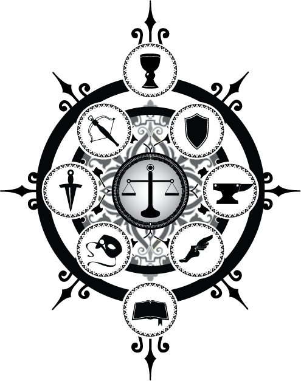
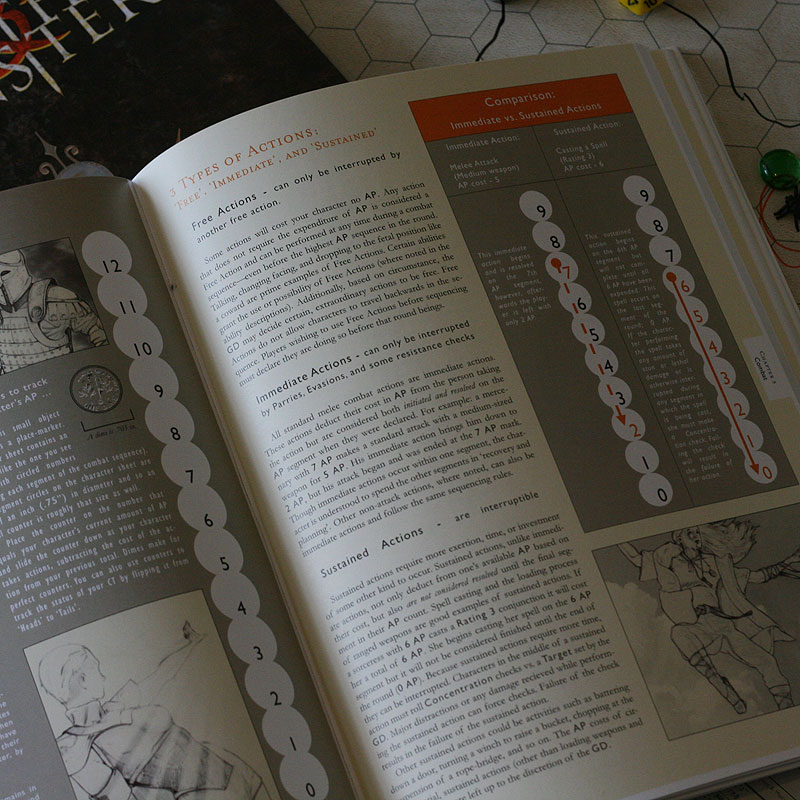
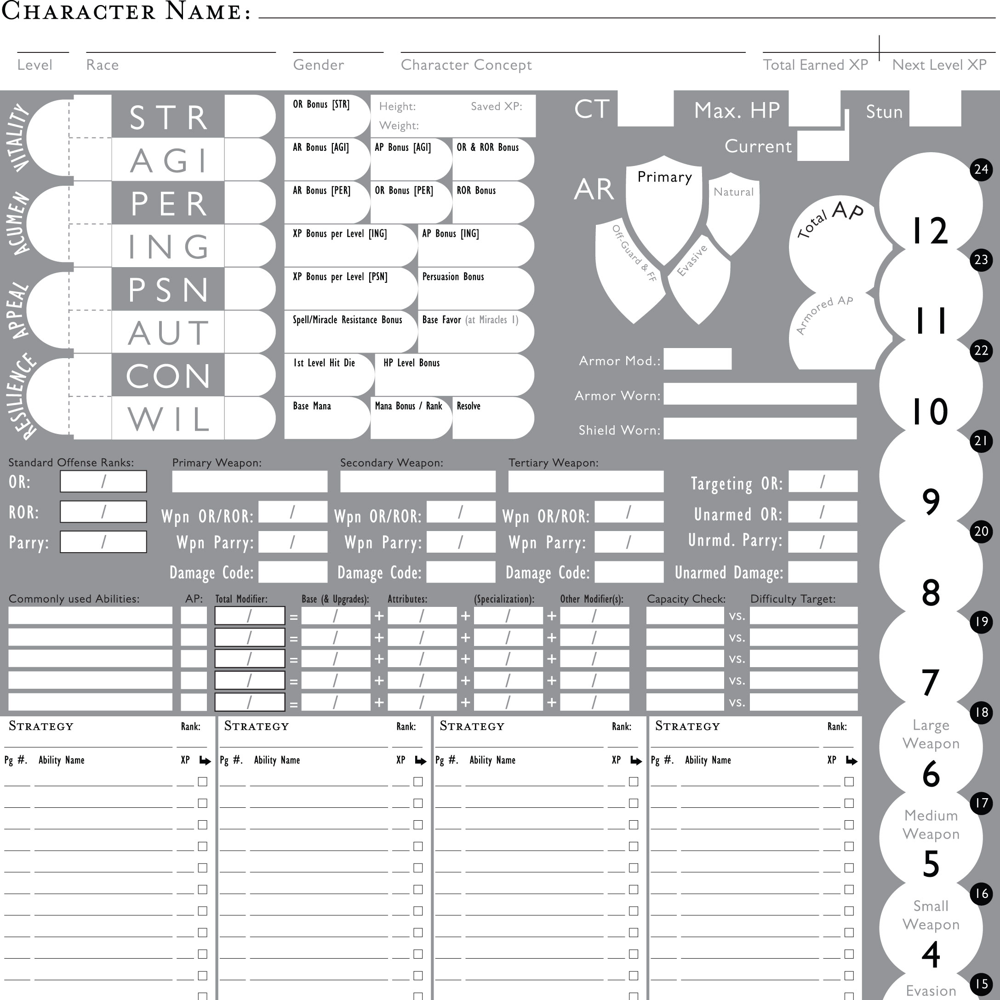
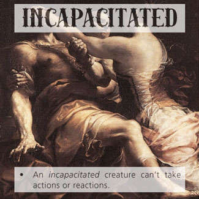

The Game
Myths & Monsters, 1st ed.
$7.00PDF available on Drivethru RPG.
Condition Cards
Free, (For D&D 5e)Keep track of your players conditions and status with this set, designed with classic paintings.
Character Sheet
Free, (For Myths & Monsters 1st Edition)PDF download (835kb) with sections for general info, attributes, essential stats, strategy abilities, and an AP tracker. Use a US Dime (or similar sized circular chit or game piece) for tracking AP on the column. On-guard and Off-guard status can be noted if using a dime with the 'heads' and 'tails' position of the coin.
Rules & Setting
The À la Carte System
The À La Carte Role-Playing Game System is a set of pen and paper game rules designed to be used for any sword and sorcery fantasy setting you can imagine. The rules are free-form and adaptable. The primary goal of playing an RPG is storytelling, not die rolling, so the best rule systems are able to be tweaked or overlooked entirely in the service of the Game Director's story. The Myths & Monsters game takes many opportunities to remind players of this idea. This is to prevent an overly strict adherence to the rules that would distract players away from what is really important: the story.
Core Rules
The core rules for the À La Carte system are given flavor and modification in the 9 Strategies. The strategies are a loose framework of ideas and systems that define what a character can do in the game. They offer the tactics that let your character interact with the game world in many dynamic ways. These tactical abilities can be mixed, matched, and upgraded freely and without restrictions, hence the name 'À La Carte'. Players purchase their abilities 'from the menu' of the 9 strategies.
Cycle of Em Campaign Setting
The Myths & Monsters game is what happens when you combine a setting and story with the À La Carte rules system. My personal setting and story line is called The Cycle of Em. Like the second edition rules system, the Cycle of Em setting is in redevelopment. what began as a loose collection of stories I told and played in as a young man needs to be more fully realized atop a more solid foundation. That work will begin in earnest when my current 5th Edition D&D campaign, 'The Heir to Disaster', concludes.
Downloads
Myths & Monsters, 1st ed.
$7.00 | PDF available on Drivethru RPG
Myths & Monsters is a sword and sorcery style tabletop RPG that presents nine strategies to players, rather than rote and preordained character classes (that run the same every time you play). Each strategy is a set of abilities, like a skill-tree, that any character can employ à la carte by unlocking them with earned XP. Buying abilities à la carte means your spell-caster can also be as much or as little of a warrior or scoundrel as you want, for example. Abilities can be blended, upgraded, and mixed and matched in countless ways. No two characters need ever be the same.
This project was a labor of love. I typeset, designed, and illustrated the entire 262 page book and was a co-designer of the rules. A second edition update and major overhaul to these rules is currently in development, but that project has no set timeline at present. The second edition will contain more codified rules for monsters, running the game, and for storytelling.
Myths & Monsters Character Sheet
Free | PDF download (835kb)
This is a PDF of the character sheet for Myths & Monsters 1st Edition. It has sections for general info, attributes, essential stats, strategy abilities, and an AP tracker column on the right-hand side. Use a US Dime (or similar sized circular chit or game piece) for tracking AP on the column. On-guard and Off-guard status can be noted if using a dime with the 'heads' and 'tails' position of the coin.
D&D 5e Condition Cards
Free | PDF available on Drivethru RPG
I made a set of condition cards using classic paintings that can be printed out and given to players in your 5th Edition games to keep track of their status and conditions.
About the Creator
This website is a collection and repository for all of the fruits of my game design endeavors. The Myths & Monsters game and the (work in progress on the) second edition of the À la Carte System are both the efforts of me, Dillon Yothers, who is just one person. I of course have a day job and I run and play other games in my free time. I occasionally make time to paint at my easel as well. All of this is to say finding time to write, edit, typeset, design, and illustrate the game-books I want to produce is difficult and moves at a very slow pace.

What I am running right now
The Heir to Disaster (Cycle of Em, D&D 5e)
The group of player characters, who have come to be known as 'The Starhunters' follow an ancient pathway known as Corinth's Meridian, gathering powerful artifacts as they go. Meanwhile, the ancient and prosperous kingdom of Rynas descends into chaos around them.
This game is a big, epic saga for five players: a Bard, a Cleric, a Ranger, a Rogue, and a Sorcerer. Most of the players were new to the game and since I am redesigning my campaign setting, I decided to run a swan song game that is a greatest hits pastiche of many of my favorite ideas and concepts from the games I played in as a young man. When this game has concluded, I will retire the current form of my original, homebrew setting.
The Trespassers (Forgotten Realms, D&D 5e)
Three warriors, who the elves call the Trespassers, journey north to the Frozen Far where they encounter a fallen angel. The machinations of the angel results in the Trespassers being taken to Evermeet against their will. They vie for a route to win vengeance upon their angelic nemesis.
This game was also for three new players: a Fighter, a Paladin, and a Ranger. It is a re-telling of the first ever D&D game that I played in when I was 14 years old. The original story borrowed heavily from the Forgotten Realms and took inspiration from the work of Michael Moorcock, Neil Gaiman and from the Ultima VIII video game.
What I am playing right now
I am not currently a player in any on-going games. :(